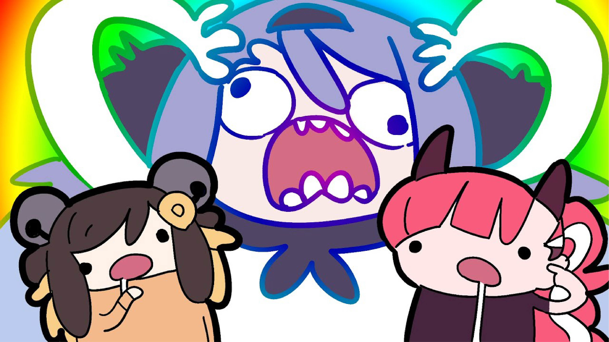

소리가 있어야 잠이 더 잘 오는 걸?
잠을 잘자는 막귀가 추천하는 수면 유도 플레이리스트
소리 없이는 잠을 잘 수 없는 사람…
시끄럽고 사람들이 북적거리는 소리에 오히려 잘 자는 사람… 왠만한 소리로는 잠이 깨지 않는 사람…
이런 분들께 추천하는 어딘가 조금 이상한 수면 플레이리스트!
잠이 오는 정도에 따라 추천된 플레이리스트를 들어보세요.
아래 플레이리스트는 실제로 글쓴이가 잠잘 때 듣고 있는 영상들입니다.
독특한 막귀를 가진 사람들에게만 해당될 수 있으니 주의해주세요.
자야하는 데 잠이 안 올 때,
“내일 일찍 일어나려면 자야하는데 잠이 안와요”
아침 일찍 일어나야하는 당신,
막상 침대에 누웠는데 도저히 잠이 안온다면…?
이 플레이리스트를 틀어 어서 잠에 들어보세요.

Playlist 1) 밥 로스 그림을 그립시다
친근한 밥 아저씨가 영어로 그림을 그리는 법을 설명하는 영상입니다. 밥 아저씨가 그림그리는 소리를 배경음악 삼아 누워있다보면, 붓이 사각거리는 소리와 편안한 목소리에 어느새 꿈나라로 갑니다. 더빙판은 무슨 이야기인지 너무 잘 들릴 수 있기 때문에 별로 추천하지 않습니다.
Playlist 2) KBS 명작다큐
유튜브에서 가장 지루해보이는 주제를 다룬 다큐 영상을 트는 것이 가장 중요합니다. 영상을 설명하는 길고 지루한 나레이션을 듣다보면 나도 모르게 눈이 감기는 마법을 느낄 수 있습니다. 하지만 유튜브 프리미엄이 아니라면 듣다가 중간중간 광고 때문에 잠자는 흐름이 끊길 수 있는 점을 주의해주세요.
Playlist 3) 물감 섞는 ASMR
가장 추천하는 물감 섞는 영상은 fritzdoesart라는 닉네임을 가진 유튜버의 영상입니다. 손만 등장해서 선택한 물체의 색과 동일해질 때까지 물감들을 섞는데 물감을 섞는 소리가 은근히 중독성이 있어 어느새 듣다보니 잠들어있는 자신을 발견할 수 있습니다. 단, 소리가 많이 작아서 볼륨을 최대로 키워뒀다가 다른 영상이 잘못이라도 틀어지면 고막이 손상될 수 있습니다.
잠이 오지만 아직 자고 싶진 않을 때,
“잠은 오는데 아직 자기에 아쉬워요”
바쁜 하루를 보내느라 제대로 놀지 못한 당신,
잠을 자자니 놀지 못한 것이 너무 억울하다면…?
잠들기 전 마지막까지 즐기다가 잠에 빠져보세요.

Playlist 1) 여행 브이로그 영상
유튜브에 다양한 브이로그 영상들이 있지만 여행을 하면서 경험하는 일들을 재밌게 이야기하는 영상을 추천합니다. 어두운 방에서 남의 여행 이야기를 연달아서 듣다보면 어느새 잠을 자게 됩니다. 너무 재미없거나 일찍 이야기가 끝나버리는 경우에 다시 일어나야 할 수 있으니 주의하세요
Playlist 2) 미드 빅뱅이론
넷플릭스에서 제공하는 미드로 코미디를 위주로한 일상 드라마입니다. 다양한 에피소드들이 연달아서 재생되기 때문에 영상을 안보고 계속 듣다보면 사람들이 많은 곳에서 잠을 자는 기분이 듭니다. 단, 내용이 재밌게 들려서 영상을 보는 바람에 잠이 깰 수 있으니 손에서 먼 곳에서 재생하세요.

Playlist 3) 요리하면서 이야기하는 영상
최대한 이야기를 많이하면서 음식을 만드는 영상인것이 중요합니다. 요리를 하면서 요리와 관련없는 이야기를 할 수록 재미있게 느껴집니다. 요리대회 영상도 충분히 대체 가능합니다. 하지만 배고픈 새벽에 계속 보다보면 결국 야식을 먹게 될 수 있으므로 주의하세요.
피곤에 찌들어 바로 잠이 들어야 할 때,
"침대에 눕기만 하면 바로 잘 것 같아요”
머리를 바닥에만 대도 잠에 빠질 것 같은 당신,
하지만 영상을 틀어놓고 자는 게 습관이 되었다면…?
시끄러운 소리 속에서도 잠에 드는 자신을 마주해보세요.

Playlist 1) 일본판 짱구는 못말려
더빙판이 아닌 유튜브에 노하라 신노스케라고 검색하면 나오는 일본판 짱구는 못말려를 추천합니다. 자막 없이 듣기만 하면 뭐라고 하는지 모르기 때문에 하나의 배경 사운드처럼 들립니다. 짱구 외에도 도라에몽과 같은 애니메이션도 같은 효과를 불러옵니다. 단,영화판은 과격한 사운드가 많을 수 있기에 일상편을 추천드립니다.

Playlist 2) 게임 트위치 다시보기
유튜브에 각종 유명 트위치 게임 영상들을 추천합니다. 배틀그라운드, 리그 오브 레전드, 블랙서바이벌, 어몽어스 등 다양한 게임들을 많은 친구들과 함께 하는 영상일 수록 좋습니다. 게임을 거의 하지 않을수록 무슨 이야기를 하는지 모르기 때문에 게임을 하는 사람들이 시끄럽게 떠드는 소리가 배경 사운드처럼 들려 잠이 오는 효과가 있습니다.
Playlist 3) 디즈니 애니메이션
너무 많이 봐서 익숙한 디즈니 영화이지만, 많은 종류들 중에 선택할 수 있다는 장점이 있습니다. 영상을 틀어두면 노래부르는 소리에 잠이 들게 됩니다. 옛날 디즈니 영화일 수록 더 많은 분량이 노래로 구성되어있기에 잠자는 용으로는 안성맞춤입니다. 다만, 듣던 도중 영화를 다시 보고 싶어져 잠이 달아날 수도 있으니 주의해주세요.
무엇을 듣더라도 잠만 잘 오면 되는거죠,
하지만 이 플레이리스트들을 아침까지 틀어놓은 채로 잠에 든다면
다음날 핸드폰 밧데리가 꺼져 알람이 안울리는 바람에 늦잠을 잘 수도 있으니 수면 예약은 필수랍니다.